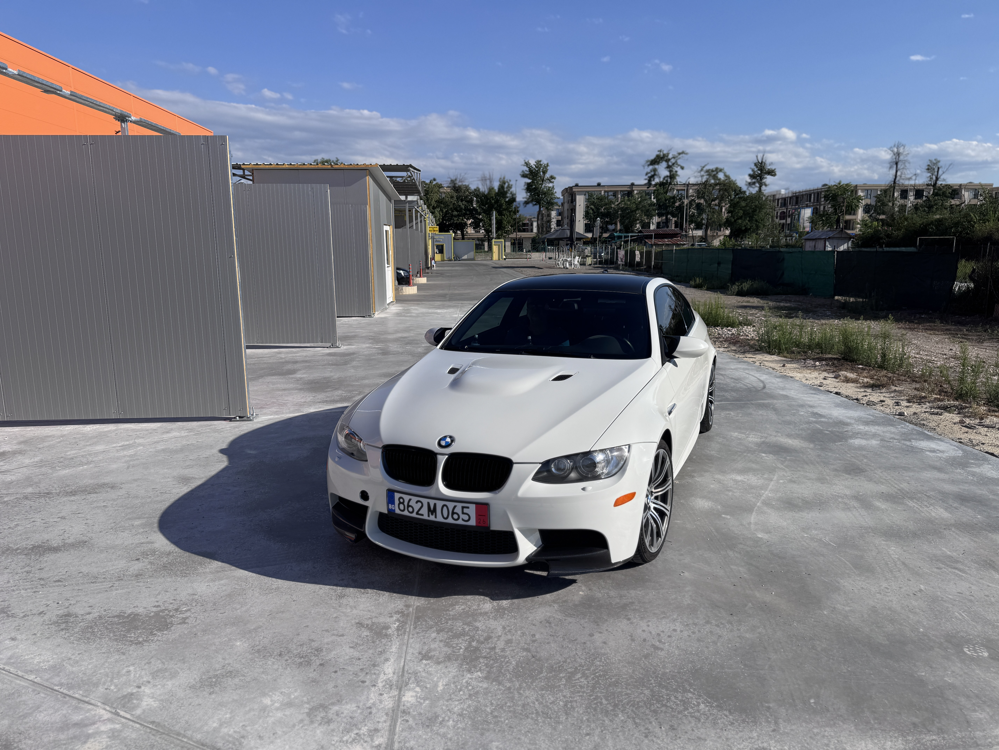

The more engaging choice for the E92 M3 and one of the main reasons clean 6MT coupes are increasingly sought after.
Naturally aspirated 4.0-litre V8 with 420 hp and a character the later M3 generations no longer have.
A clean dashboard without the navigation screen, visually lighter and closer to a classic driver-focused cockpit.
A classic M colour combination with black Novillo leather and the right coupe presence.
One of the essential E92 M3 details: a lower centre of gravity and a clear visual sign of the real M coupe.
Low mileage for the model, supporting the car's position as a car to drive and preserve.
Carbon lips and carbon dashboard trim with stitching, giving the car a sharper but still correct look.
BMW Individual black anthracite headliner, making the interior feel more focused and complete.
Why This Example Matters
The value is in the combination: the right drivetrain, the right roof, the right interior and the right mileage.
The strongest E92 M3 examples are not valuable simply because they are M3s. They stand out when the desirable choices come together: manual gearbox, S65 naturally aspirated V8, carbon roof, single hump dashboard, lower mileage and a clean colour combination.
This car has exactly that profile. 87,000 km places it in a more interesting zone for a collector-minded buyer, the manual gearbox makes it more involving, and the carbon roof plus single hump dashboard are details enthusiasts notice immediately.
Alpine White III, carbon lips, carbon dashboard trim with stitching and the BMW Individual anthracite headliner give the car a complete look: special, focused and still true to the OEM character that matters for long-term desirability.
Collector Argument
Why it makes sense for this car to become more desirable
The E92 M3 occupies a rare place in M history: the last M3 coupe before the move to the M4 name, the only M3 generation powered by a naturally aspirated V8, and one of the last M cars with a clearly analogue feel. Later generations moved to turbocharged six-cylinder engines and a more digital personality, which makes the S65 V8 stand apart.
The market already recognizes this. Hagerty included the 2008-2013 BMW M3 in its Bull Market selection and specifically highlighted the E92, the V8 character and the carbon-fibre roof as part of the modern-classic appeal. PistonHeads describes the V8 M3 as one of a kind, while The Smoking Tire review cited by BMWBLOG frames the E92 as a collector candidate because it is the last M3 Coupe and the only V8 M3 generation.
This is not a price promise. It is the demand logic: cars with the right specification, lower mileage, a clear condition story and preserved OEM character are usually the first to separate from the broader market.
What makes this example stronger
- 87,000 kmLower mileage for an E92 M3 and a stronger basis for preservation.
- 6MTManual gearbox with the cleanest S65 driving feel.
- Carbon roofAn important M detail visually and dynamically.
- Single humpA cleaner cockpit without the navigation screen.
- OEM+ carbonCarbon lips and carbon dashboard trim with stitching.
- Individual anthraciteBlack headliner completing the interior.
Gallery
The E92 shape works best when there is room around it.
Specification
Short, clear and focused on what matters.
Full Equipment List
Equipment that supports the right M3 configuration.
Comfort
- Comfort Access
- Electric front seats with memory
- Heated front seats
- Automatic climate control
- Cruise control
- Auto-dimming interior mirror
Lighting and Security
- Xenon headlights
- Adaptive headlights
- Headlight washers
- Rain sensor
- Lighting package
- Alarm system
Audio and Connectivity
- BMW Professional radio
- HiFi System Professional
- USB / audio interface
- Preparation for CD changer
- Preparation for satellite tuner
- Mobile phone preparation USA / Canada
M Details and Interior
- M Double Spoke Style 220M wheels
- BMW Individual Anthracite headliner
- Carbon roof
- Single hump dashboard without navigation
- Carbon dashboard trim with stitching
- Ski bag / long-load opening
- Canada specification / English language version

Factory M Character
Carbon roof, wide rear stance and quad exhausts: the details that make an E92 M3 instantly recognizable.
No explanation is really needed here: the carbon roof, the wide rear stance and the four exhaust tips are part of the E92 M3 DNA. This is the look that still makes the model feel special.
Condition and Transparency
- The engine runs very well
- Cold and warm starts are smooth
- The car was inspected during preparation
- Additional information is available for serious interest
Who This M3 Is For
For a buyer who understands why the manual gearbox, carbon roof, single hump dashboard and S65 V8 make this configuration more special. This is a car to drive and preserve, not just another fast coupe.
Viewing and Contact
Interested in the E92 M3?
The car can be viewed by appointment. For serious interest, we can provide additional information about condition, preparation and available documentation.